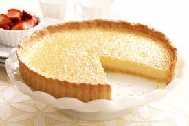

A perfect finish to the meal that’s not too heavy, Lemon Tart recipe is a classic tart known in French as Tarte au Citron.
Endlessly popular, you’ll find it on the shelves of patisseries all across France, and it’s a favoured dessert served at French bistros or even fine dining restaurants.
Tangy, refreshing and light, this tart makes the perfect dessert to follow on from decadent and rich French mains!😊🇫🇷
We use both lemon zest and juice for this recipe. You’ll need 2 normal size lemons, or 3 smaller lemons
Butter
Unsalted butter, cut into cubes so it melts more evenly
Eggs
Eggs are what sets the lemon curd filling into a custard.
We’re using both whole eggs and egg yolks.
Yolks add richness which gives the filling a nice and creamy mouthfeel
Sugar
Caster / superfine white sugar is best, for ease of dissolving.
However ordinary white sugar will work just fine here.
How to make the Lemon Tart filling
Put it all in a saucepan and whisk over low heat until it thickens and You're DONE!
Lemon Tart with different toppings and flavours
with Sprinkled SugarMeringuewith Blackberrieswith Lemon and mint leaveswith Blueberry Pastewith chocolatewith Raspberrieswith Vanilla Ice-cream